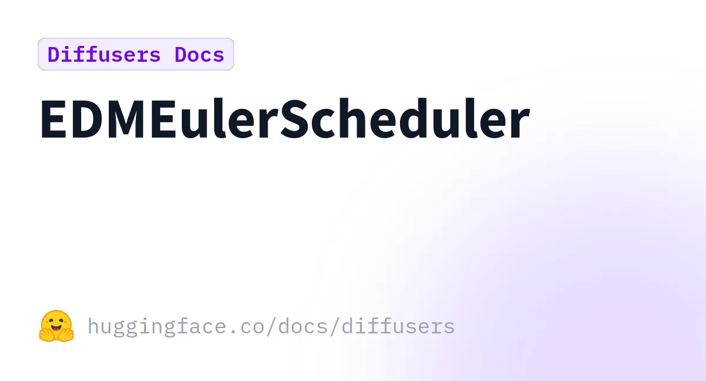

Atlas›Expedition
Diffusion Models:
From Noise to Image
— and Into Midjourney v6
7 regions
158 citations
40 min journey
expedition depth
ε-pred · v-pred · rectified flow
June 2026
The Unifying Object
∇x log p(x)
Every architecture surveyed — U-Net, DiT, MMDiT, FLUX — is a different box for computing this single object: the score function, the gradient of the log data density. Forward diffusion destroys information by following a noise schedule; reverse diffusion reconstructs by following the score back toward data. [1] [2]
Every training objective — ε-prediction, x₀-prediction, v-prediction, rectified flow — is a reparametrisation of the same score.
[EDM]
When you dial Midjourney's --stylize up, you are amplifying the conditional score gap relative to the unconditional one. The craft is craft; the substrate is differential geometry.
ε̂ = ε(x,∅) + w·(ε(x,c) − ε(x,∅))
Classifier-Free Guidance
The formula behind every
guidance_scale and --stylize parameter.
w amplifies the conditional-vs-unconditional gap, steering the denoising trajectory in latent space.
[EDM, Karras 2022]
The Territory — Seven Regions
REGION 01
Forward Diffusion and Noise Schedules
How the forward process works mathematically, and how the choice of noise schedule — linear, cosine, EDM σ, or Laplace — shapes training quality, resolution behaviour, and what not to get wrong.
REGION 02
Reverse Denoising: Architectures and the Score Network
How the denoiser that drives reverse diffusion is really a score network, and how its backbone evolved from U-Net to the transformers behind FLUX, SD3 and Sora.
REGION 03
Text Conditioning via CLIP (and Beyond)
How CLIP's shared text/image embedding space powers diffusion model conditioning — and why modern models stack T5-XXL, dual CLIPs, and even full LLMs on top.
REGION 04
Why Hands Broke — and What Fixed It
A technical post-mortem: sparse training data, CLIP counting blindness, VAE resolution limits, U-Net locality, and mode-interpolation — plus the layered fixes that pushed success rates from ~30% to ~90% by 2025.
REGION 05
Midjourney v6 Prompt Craft
How to prompt Midjourney v6: drop the v5 keyword soup, write natural-language scenes, and use weights, references and parameters deliberately.
REGION 06
Latent Space and VAE
VAEs encode data as probability distributions in latent space, enabling smooth interpolation and generative capabilities beyond standard autoencoders.
REGION 07
ControlNet and Structural Conditioning
ControlNet adds spatial control to image generation by training a parallel network branch to inject structural guidance without disrupting the base model.
Architecture Evolution — 2020 → 2024
2020
U-Net DDPM
Convolutional backbone; local context; skip connections
2021
ADM
Beats GANs; multi-head attention at coarser resolutions
2022
LDM / SD
Latent space + cross-attention; text conditioning
2023
DiT
Full transformer on patches; monotonic Gflops→FID scaling
2024
MMDiT / SD3
Joint text-image attention streams; rectified flow
2024
FLUX.1
12B MMDiT; correct fingers without anatomical training data
Five Field Notes from the Expedition
01
Architecture and anatomy are causally linked
U-Net's convolutional locality meant fingers were processed without global palm context — the network learned fingers as local textures, not as a kinematically constrained structure. DiT and MMDiT replace this with full-sequence self-attention: every finger token attends to every palm token in every layer. [DiT]
FLUX.1's 12B-parameter MMDiT achieved "correct finger count in the vast majority of generations" [Ikomia] not from anatomical training data, but because global attention enforces global consistency as an architectural side-effect. The scaling law DiT demonstrated — more compute → lower FID monotonically — is the same reason FLUX outperforms SDXL on anatomy at matched prompt complexity.
02
The text encoder stack is the hidden variable behind prompt strategy
CLIP's 77-token hard limit and visual-contrastive training bias made keyword-front-loading rational in SD 1.x: token 78 onward was invisible, so packing the most important terms early was load-bearing engineering, not stylistic preference. [CLIP]
Imagen's demonstration that a frozen T5-XXL outperforms CLIP on compositional prompts [Imagen] — and SD3/FLUX's stacking of dual CLIPs with T5 — is what legitimises Midjourney v6's "write a natural scene description" instruction. By 2026, HiDream-I1 uses a full Llama-3.1-8B encoder — prompt writing and LLM prompting converge completely.
03
Resolution and the VAE interact in ways the surface-level pipeline hides
The VAE's 8× spatial compression means a full-frame hand at 512px collapses to 5–8 latent pixels per finger — the decoder is asked to reconstruct detail it never saw encoded. [MakeUseOf] SDXL's move to 1024px native resolution tripled the effective latent resolution for fine anatomy. ControlNet's depth-map injection acts as a structural bypass: it supplies the spatial constraints the latent bottleneck loses, explicitly conditioning the score network on 3D structure rather than asking it to infer depth from pixel patterns alone.
04
The noise schedule's effect on practitioners is underappreciated
The EDM finding that zero terminal SNR must be enforced [Lin 2023] is directly observable in generation: models trained with the common cosine schedule produce slightly hazy darks and cannot generate pure-black backgrounds. Every sampler tuning — DDIM vs DPM-Solver vs Euler, step counts, sigma schedule — changes which part of the SNR curve gets the most compute. The practitioner proxy: when a model refuses high-contrast results, non-zero terminal SNR is leaking into inference.
05
Open question: does rectified flow change prompt-engineering intuitions?
FLUX and SD3 use rectified flow — learning straight transport paths rather than curved SDE trajectories. [Liu 2022] Empirically this makes fewer steps viable, but whether it changes which prompt tokens govern which spatial regions in cross-attention, and therefore whether front-loading rules still apply, is not yet settled in the literature. The shift in transport geometry may have entirely different implications for prompt token weighting than the DDPM-style score matching that the existing craft guidance was built on.
Midjourney v6 Parameter Deck
--stylize / --s
0 – 1000 · default 100
Amplifies the conditional score gap (CFG-equivalent). High values give Midjourney creative latitude and may stray from the prompt; 0–50 for strict literal output.
--chaos / --c
0 – 100 · default 0
Increases variance across the four-image grid. High values mean images can be quite different and may not stick closely to the prompt.
--weird / --w
0 – 3000 · default 0
Adds experimental, unconventional qualities. Experimental feature — not fully compatible with seeds. Use sparingly.
--style raw
toggle · default off
Disables Midjourney's auto-styling. More literal, photo-like results. Recommended for in-image text generation with quoted text.
--no
= X :: -0.5 weight
Negative prompt shorthand. Equivalent to a −0.5 multi-prompt weight. Total weights must remain positive or it errors.
--seed
0 – 4,294,967,295 · random
Sets starting noise for reproducibility. Turbo mode breaks reliable seed locking — avoid combining them.
The v6 Paradigm Shift
Drop the keyword soup. v5's front-loaded token strategy was load-bearing engineering for CLIP's 77-token limit and visual-contrastive bias. v6's T5-based conditioning understands grammar, syntax, and spatial relations. Write a natural-language scene description as you would brief a photographer: subject → medium → lighting → colour → composition → mood → parameters. Strip quality tokens (8k, photorealistic, award-winning) entirely — v6 penalises vague filler and rewards explicit scene description.
[official docs]
Key Open-Source Infrastructure

Landmark Papers and Resources
What are Diffusion Models? — Lilian Weng
Canonical explainer unifying DDPM, score matching, and SDE frameworks with clear derivations
survey blog
Generative Modeling by Estimating Gradients
Score-based generative modeling from the author; visual derivation of the Fisher-divergence objective
author blog
DDPM — Ho et al. (2020)
Denoising Diffusion Probabilistic Models; closed-form marginal and the ε-prediction objective
peer-reviewed · NeurIPS 2020
EDM — Karras et al. (2022)
Elucidating the Design Space; σ-schedule, preconditioning coefficients, FID 1.79 on CIFAR-10
peer-reviewed · NeurIPS 2022
DiT — Peebles & Xie (2023)
Scalable Diffusion Models with Transformers; FID 2.27; monotonic Gflops → FID scaling law
peer-reviewed · ICCV 2023
Imagen — Saharia et al. (2022)
Frozen T5-XXL outperforms CLIP on compositional prompts; scaling the text encoder > scaling the UNet
peer-reviewed · Google Research
Midjourney v6 Prompt Basics
Official framework: subject · medium · environment · lighting · color · mood · composition
official docs

HF Diffusers: EDM Euler Scheduler
sigma_min=0.002, sigma_max=80, rho=7.0 — Karras 2022 reference implementation
official docs